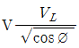
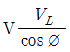
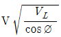
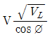
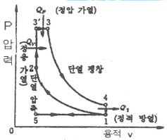
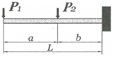
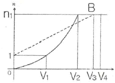
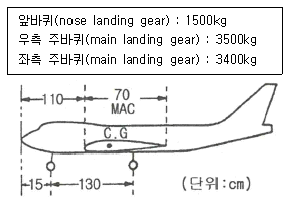
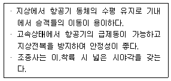
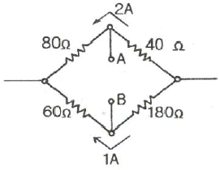

항공산업기사 (2018-03-04 기출문제)
1과목: 항공역학
1. 무동력(power off)비행 시 실속속도와 동력(power on)비행 시 실속속도의 관계로 옳은 것은?
- 서로 동일하다.
- 비교할 수 없다.
- 동력비행 시의 실속속도가 더 크다.
- 무동력비행 시의 실속속도가 더 크다.
(정답률: 61%)

2. 날개의 길이(span)가 10m이고 넓이가 25m2인 날개의 가로세로비(aspect ratio)는?
- 2
- 4
- 6
- 8
(정답률: 87%)
3. 헬리콥터의 제자리 비행 시 발생하는 전이성향편류를 옳게 설명한 것은?
- 주로터가 회전할 때 토크를 상쇄하기 위해 미부로터가 수평추력을 발생시키는 것
- 단일로터 헬리콥터에서 주로터와 미부로터의 추력이 효과적인 균형을 이룰 때 헬리콥터가 옆으로 흐르는 현상
- 종렬로터와 동축로터 시스템의 헬리콥터에서 토크를 방지하기 위한 로터가 상호 반대로 회전하는 것
- 헬리콥터의 주로터 회전방향이 반대방향으로 동체가 돌아가려는 성질
(정답률: 68%)
4. 유체흐름과 관련된 각 용어의 설명이 옳게 짝지어진 것은?
- 박리 : 층류에서 난류로 변하는 현상
- 층류 : 유체가 진동을 하면서 흐르는 흐름
- 난류 : 유체 유동특성이 시간에 대해 일정한 정상류
- 경계층 : 벽면에 가깝고 점성이 작용하는 유체의 층
(정답률: 85%)
5. 프로펠러의 역피치(reverse pitch)를 사용하는 주된 목적은?
- 후진비행을 위해서
- 추력의 증가를 위해서
- 착륙 후의 제동을 위해서
- 추력을 감소시키기 위해서
(정답률: 75%)
6. 임계마하수가 0.70인 직사각형 날개에서 임계마하수를 0.91로 높이기 위해서는 후퇴각을 약 몇 도(°)로 해야 하는가
- 10°
- 20°
- 30°
- 40
(정답률: 37%)
7. 비행기의 이륙활주거리를 짧게 하기 위한 방법이 아닌 것은?
- 엔진의 추력을 크게 한다.
- 비행기의 무게를 감소한다.
- 슬렛(slat)과 플랩(flap)을 사용한다.
- 항력을 줄이기 위해 작은 날개를 사용한다.
(정답률: 87%)
8. 항력계수가 0.02이며, 날개면적이 20m2인 항공기가 150m/s로 등속도 비행을 하기 위해 필요한 추력은 약 몇 kgf인가? (단, 공기의 밀도는 0.125kgf∙s2/m4이다.)
- 433
- 563
- 643
- 723
(정답률: 70%)
9. 항공기가 스핀상태에서 회복하기 위해 주로 사용하는 조종면은?
- 러더
- 에일러론
- 스포일러
- 엘리베이터
(정답률: 64%)
10. 비행기의 방향 조종에서 방향키 부유각(float angle)에 대한 설명으로 옳은 것은?
- 방향키를 고정했을 때 공기력에 의해 방향키가 변위되는 각
- 방향키를 자유로 했을 때 공기력에 의해 방향키가 자유로이 변위되는 각
- 방향키를 밀었을 때 공기력에 의해 방향키가 변위되는 각
- 방향키를 당겼을 때 공기력에 의해 방향키가 변위되는 각
(정답률: 83%)
11. 해면고도에서 표준대기의 특성값으로 틀린 것은?
- 표준온도는 15℉ 이다.
- 밀도는 1.23kg/m3이다.
- 대기압은 760㎜Hg이다.
- 중력가속도는 32.2ft/s2이다.
(정답률: 87%)
12. 날개끝 실속을 방지하는 보조장치 및 방법으로 틀린 것은?
- 경계층 펜스를 설치한다.
- 톱날 앞전 형태를 도입한다.
- 날개의 후퇴각을 크게 한다.
- 날개가 워시아웃(wash out) 형상을 갖도록 한다.
(정답률: 54%)
13. 등속수평비행에서 경사각을 주어 선회하는 경우 동일 고도를 유지하기 위한 선회속도와 수평비행속도와의 관계로 옳은 것은? (단, VL : 수평비행속도, V : 선회속도, ø : 경사각이다.)




(정답률: 62%)
14. 날개하중이 30kgf/m2이고, 무게가 1000kgf인 비행기가 7000m 상공에서 급강하 하고 있을 때 항력계수가 0.1이라면 급강하 속도는 몇 m/s인가? (단, 공기의 밀도는 0.06kgf∙s2/m4이다.)
- 100
- 100√3
- 200
- 100√5
(정답률: 59%)
15. 무게가 4000kgf, 날개면적 30m2 인 항공기가 최대양력계수 1.4로 착륙할 때 실속속도는 약 몇 m/s인가? (단, 공기의 밀도는 1/8kgf∙s2/m4이다.)
- 10
- 19
- 30
- 39
(정답률: 55%)
16. 비행기가 트림(trim)상태로 비행한다는 것은 비행기 무게중심 주위의 모멘트가 어떤 상태인 경우인가?
- “부(-)”인 경우
- “정(+)”인 경우
- “영(0)”인 경우
- “정”과 “영”인 경우
(정답률: 80%)
17. 비행기가 평형상태에서 이탈된 후, 평형상태와 이탈상태를 반복하면서 그 변화의 진폭이 시간의 경과에 따라 발산하는 경우를 가장 옳게 설명한 것은?
- 정적으로 안정하고, 동적으로는 불안정하다.
- 정적으로 안정하고, 동적으로도 안정하다.
- 정적으로 불안정하고, 동적으로는 안정하다.
- 정적으로 불안정하고, 동적으로도 불안정하다.
(정답률: 69%)
18. 태양이 방출하는 자외선에 의하여 대기가 전리되어 자유전자의 밀도가 커지는 대기권 층은?
- 중간권
- 열권
- 성층권
- 극외권
(정답률: 78%)
19. 프로펠러에 작용하는 토크(torque)의 크기를 옳게 나타낸 것은? (단, ρ : 유체밀도, n : 프로펠러 회전수, Cq : 토크계수, D: 프로펠러의 지름이다.)
- CqρnD
- CqD2/ρn
- Cqρn2D5
- ρn/CqD2
(정답률: 81%)
20. 헬리콥터에서 회전날개의 회전 위치에 따른 양력 비대칭 현상을 없애기 위한 방법은?
- 회전깃에 비틀림을 준다.
- 플래핑 힌지를 사용한다.
- 꼬리 회전날개를 사용한다.
- 리드-래그 힌지를 사용한다.
(정답률: 72%)
2과목: 항공기관
21. 가스터빈엔진의 후기연소기가 작동중일 때 배기노즐 단면적의 변화로 옳은 것은?
- 감소된다.
- 증가된다.
- 변화 없다.
- 증가 후 감소된다.
(정답률: 66%)
22. 그림과 같은 P-V선도는 어떤 사이클을 나타낸 것인가?

- 정압사이클
- 정적사이클
- 합성사이클
- 카르노사이클
(정답률: 66%)
23. 왕복엔진에서 순환하는 오일에 열을 가하는 요인 중 가장 영향이 적은 것은?
- 연료펌프
- 로커암 베어링
- 커넥팅로드 베어링
- 피스톤과 실린더 벽
(정답률: 65%)
24. 프로펠러의 평형작업에 관한 설명으로 틀린 것은?
- 2깃 프로펠러는 수직 또는 수평평형검사 중 한 가지만 수행한 후 수정 작업한다.
- 동적 불평형은 프로펠러 깃 요소들의 중심이 동일한 회전면에서 벗어났을 때 발생한다.
- 정적 불평형은 프로펠러의 무게중심이 회전축과 일치하지 않을 때 발생한다.
- 깃의 회전궤도가 일정하지 못할 때에는 진동이 발생하므로 깃 끝 궤도검사를 실시한다.
(정답률: 73%)
25. 가스를 팽창 또는 압축시킬 때 주위와 열의 출입을 완전히 차단시킨 상태에서 변화하는 과정을 나타낸 식은? (단, P는 압력, v는 비체적, T는 온도, k는 비열비이다.)
- Pv = 일정
- Pvk = 일정
- P/T = 일정
- T/v = 일정
(정답률: 61%)
26. 제트엔진의 압축기에서 압축된 고온의 공기를 일부 우회시켜 압축기 흡입부의 방빙, 연료가열 및 항공기 여압과 제빙에 사용하는데 이 공기를 제어하는 장치는?
- 차단밸브
- 섬프밸브
- 블리드밸브
- 점화가스밸브
(정답률: 81%)
27. 항공기용 왕복엔진의 이상적인 사이클은?
- 오토사이클
- 디젤사이클
- 카르노사이클
- 브레이톤사이클
(정답률: 76%)
28. 체적을 일정하게 유지시키면서 단위질량을 단위온도로 높이는데 필요한 열량은?
- 단열
- 비열비
- 정압비열
- 정적비열
(정답률: 69%)
29. 축류형 압축기에서 1단(stage)의 의미를 옳게 설명한 것은?
- 저압압축기(low compressor)를 말한다.
- 고압압축기(high compressor)를 말한다.
- 1열의 로터(rotor)와 1열의 스테이터(stator)를 말한다.
- 저압압축기(low compressor)와 고압압축기(high compressor)의 1쌍을 말한다.
(정답률: 83%)
30. 속도 1080㎞/h로 비행하는 항공기에 장착된 터보제트엔진이 294 kg/s 로 공기를 흡입하여 400m/s로 배기 시킬 때 비추력은 약 얼마인가?
- 8.2
- 10.2
- 12.2
- 14.2
(정답률: 62%)
31. 왕복엔진의 밸브작동장치 중 유압 타펫(hydraulic tappet)의 장점이 아닌 것은?
- 밸브 개폐시기를 정확하게 한다.
- 밸브 작동기구의 충격과 소음을 방지한다.
- 열팽창 변화에 의한 밸브간극을 항상 “0”으로 자동 조장한다.
- 엔진 작동 시 열팽창을 작게하여 실린더 헤드의 온도는 낮춘다.
(정답률: 54%)
32. 항공기 엔진의 오일필터가 막혔다면 어떤 현상이 발생 하는가?
- 엔진 윤활계통의 윤활 결핍현상이 온다.
- 높은 오일압력 때문에 필터가 파손된다.
- 오일이 바이패스 밸브(bypass valve)를 통하여 흐른다.
- 높은 오일압력으로 체크밸브(check valve)가 작동하여 오일이 되돌아 온다.
(정답률: 79%)
33. 정속 프로펠러(constant speed propeller)에 대한 설명으로 옳은 것은?
- 조속기에 의해서 자동적으로 피치를 조정할 수 있다.
- 3방향 선택밸브(3way valve)에 의해 피치가 변경된다.
- 저 피치(low pitch)와 고 피치(high pitch)인 2개의 위치만을 선택 할 수 있다.
- 깃각(blade angle)이 하나로 고정되어 피치변경이 불가능하다.
(정답률: 73%)
34. 가스터빈엔진의 연료계통에 사용되는 P&D밸브(Pressurizing & Dump Valve)의 역할이 아닌 것은?
- 연료의 흐름을 1차 연료와 2차 연료로 분리시킨다.
- 엔진이 정지되었을 때 연료노즐에 남아있는 연료를 외부로 방출한다.
- 연료의 압력이 일정압력 이상이 될 때까지 연료의 흐름을 차단한다.
- 펌프 출구압력이 규정 값 이상으로 높아지면 열려서 연료를 기어펌프 입구로 되돌려 보낸다.
(정답률: 60%)
35. 엔진 윤활유 탱크 내 설치된 호퍼(hopper)의 기능은?
- 엔진의 급가속 시 윤활유의 공급량을 증대시킨다.
- 엔진으로부터 배유된 윤활유의 온도를 측정한다.
- 윤활유에 연료를 혼합하여 윤활유의 점도를 조정한다.
- 시동 시 신속히 오일온도를 상승시키게 한다.
(정답률: 68%)
36. 왕복엔진의 크랭크 케이스 내부에 과도한 가스 압력이 형성되었을 경우 크랭크 케이스를 보호하기 위하여 설치된 장치는?
- 블리드(bleed) 장치
- 브레더(breather) 장치
- 바이패스(by-pass) 장치
- 스케벤지(scavenge) 장치
(정답률: 57%)
37. 추진 시 공기를 흡입하지 않고 자체 내의 고체 또는 액체의 산화제와 연료를 사용하는 엔진은?
- 로켓
- 램제트
- 펄스제트
- 터보프롭
(정답률: 86%)
38. 항공기용 왕복엔진의 연료계통에서 베이퍼록(vapor lock)의 원인이 아닌 것은?
- 연료 온도 상승
- 연료의 낮은 휘발성
- 연료탱크 내부의 거품발생
- 연료에 작용되는 압력의 저하
(정답률: 63%)
39. 헬리콥터용 터보샤프트엔진을 시운전실에서 시험하였더니 24000rpm 에서 토크가 51kg∙m이었다면 이 때 엔진은 약 몇 마력(ps)인가?
- 1709
- 21⑤
- 2400
- 2571
(정답률: 32%)
40. 왕복엔진의 작동 중에 안전을 위해 확인해야 하는 변수가 아닌 것은?
- 오일압력
- 흡기압력
- 연료온도
- 실린더헤드온도
(정답률: 54%)
3과목: 항공기체
41. SAE 4130 합금강에서 숫자 4는 무엇을 의미하는가?
- 크롬
- 몰리브덴강
- 4%의 카본
- 0.04%의 카본
(정답률: 69%)
42. 세미모노코크(semi monocoque)구조형식의 비행기 동체에서 표피가 주로 담당하는 하중은?
- 굽힘과 비틀림
- 인장력과 압축력
- 비틀림과 전단력
- 굽힘, 인장력 및 압축력
(정답률: 61%)
43. 그림과 같은 외팔보에 집중하중(P1, P2)이 작용할 때 벽 지점에서의 굽힘모멘트를 옳게 나타낸 것은?

- 0
- -P1a
- -P1L-P2b
- -P1b+P2b
(정답률: 63%)
44. 판금작업 시 구부리는 판재에서 바깥면의 굽힘 연장선의 교차점과 굽힘 접선과의 거리를 무엇이라고 하는가?
- 세트백(set back)
- 굽힘각도(degree of bend)
- 굽힘여유(bend allowance)
- 최소반지름(minimum radius)
(정답률: 77%)
45. 그림과 같은 V-n 선도에서 n1은 설계제한 하중배수, 점선 1-B는 돌풍하중 배수선도라면 옳게 짝지은 것은?

- V1 - 실속속도
- V2 - 설계순항속도
- V3 - 설계급강하속도
- V4 - 설계운용속도
(정답률: 57%)
46. 양극산화처리 방법 중 사용 전압이 낮고, 소모 전력량이 적으며, 약품 가격이 저렴하고 폐수처리도 비교적 쉬워 가장 경제적인 방법은?
- 수산법
- 인산법
- 황산법
- 크롬산법
(정답률: 65%)
47. 항공기의 고속화에 따라 기체재료가 알루미늄합금에서 티타늄합금으로 대체되고 있는데 티타늄합금과 비교한 알루미늄합금의 어떠한 단점 때문인가?
- 너무 무겁다.
- 열에 강하지 못하다.
- 전기저항이 너무 크다.
- 공기와의 마찰로 마모가 심하다.
(정답률: 79%)
48. 항공기의 연료계통에 대한 고려 사항으로 틀린 것은?
- 고도에 따른 공기와 연료의 특성변화를 고려해야 한다.
- 항공기의 운동자세와 무관하게 연료를 엔진으로 공급할 수 있어야 한다.
- 연료의 소모량에 따라 변하는 항공기의 무게중심에 대한 균형을 유지하여야 한다.
- 연료탱크가 주 날개에 장착된 항공기는 날개 끝 부분의 연료부터 사용해야 한다.
(정답률: 72%)
49. 다음 중 용접 조인트(joint) 형식에 속하지 않는 것은?
- 랩조인트(lap joint)
- 티조인트(tee joint)
- 버트조인트(butt joint)
- 더블조인트(double joint)
(정답률: 65%)
50. 비행 중 발생하는 불균형 상태를 탭을 변위시킴으로써 정적균형을 유지하여 정상 비행을 하도록 하는 장치는?
- 트림탭(trim tab)
- 서보탭(servo tab)
- 스프링탭(spring tab)
- 밸런스탭(balance tab)
(정답률: 57%)
51. 항공기 중량을 측정한 결과를 이용하여 날개 앞전으로부터 무게중심까지의 거리를 MAC(공력평균시위) 백분율로 표시하면 약 얼마인가?

- 14.5% MAC
- 16.9% MAC
- 21.7% MAC
- 25.4% MAC
(정답률: 55%)
52. 비상구, 소화제 발사장치, 비상용 제동장치핸들, 스위치, 커버 등을 잘못 조작하는 것을 방지하고, 비상 시 쉽게 제거할 수 있도록 하는 안전결선은?
- 고정 결선(lock wire)
- 전단 결선(shear wire)
- 다선식 안전결선법(multi wire method)
- 복선식 안전결선법(double twist method)
(정답률: 67%)
53. 다음과 같은 특징을 갖는 착륙장치의 형식은?

- 고정식 착륙장치
- 앞 바퀴식 착륙장치
- 직렬식 착륙장치
- 뒷 바퀴식 착륙장치
(정답률: 76%)
54. 다음 중 응력을 설명한 것으로 옳은 것은?
- 단위 체적 당 무게이다.
- 단위 체적 당 질량이다.
- 단위 길이 당 늘어난 길이이다.
- 단위 면적 당 힘 또는 힘의 세기이다.
(정답률: 78%)
55. 나셀(nacelle)에 대한 설명으로 옳은 것은?
- 기체의 인장하중을 담당한다.
- 엔진을 장착하여 하중을 담당하기 위한 구조물이다.
- 기체에 장착된 엔진을 둘러싼 부분을 말한다.
- 일반적으로 기체의 중심에 위치하여 날개구조를 보완한다.
(정답률: 75%)
56. 항공기용 볼트의 부품번호가 AN 3 DD 5 A인 경우 “DD”를 가장 옳게 설명한 것은?
- 부식 저항용 강을 나타낸다.
- 카드뮴 도금한 강을 나타낸다.
- 싱크에 드릴작업이 되지 않은 상태를 나타낸다.
- 재질을 표시하는 것으로 2024 알루미늄합금을 나타낸다.
(정답률: 83%)
57. 원형단면의 봉이 비틀림 하중을 받을 때 비틀림 모멘트에 대하 식으로 옳은 것은?
- 굽힘응력 × (단면계수 ÷ 단면의 반지름)
- 전단응력 × (횡탄성계수 ÷ 단면의 반지름)
- 전단변형도 × (단면오차모멘트 ÷ 단면의 반지름)
- 전단응력 × (극관성모멘트 ÷ 단면의 반지름)
(정답률: 65%)
58. 다음 중 평소에는 하중을 받지 않는 예비부재를 가지고 있는 구조형식은?
- 이중구조
- 하중경감구조
- 대치구조
- 다중하중경로구조
(정답률: 65%)
59. 다른 재질의 금속이 접촉하면 접촉전기와 수분에 의해 국부전류흐름이 발생하여 부식을 초래하게 되는 현상을 무엇이라고 하는가?
- Galvanic corrosion
- Bonding
- Anti-Corrosion
- Age Hardening
(정답률: 77%)
60. 항공기 기체수리 작업 시 리벳팅 전에 임시 고정하는 데 사용하는 공구는?
- 시트파스너
- 딤플링
- 캠-룩파스너
- 스퀴즈
(정답률: 62%)
4과목: 항공장비
61. 화재감지계통에서 화재의 지시에 대한 설명으로 옳은 것은?
- 가청 알람 시스템과 경고등으로 화재를 확인할 수 있다.
- 화재가 진행하는 동안 발생 초기에만 지시해 준다.
- 화재가 다시 발생할 때에는 다시 지시하지 않아야 한다.
- 화재를 지시하지 않을 때 최대의 전력 소모가 되어야 한다.
(정답률: 78%)
62. 신호에 따라 반송파의 진폭을 변화시키는 변조방식은?
- FM 방식
- AM 방식
- PCM 방식
- PM 방식
(정답률: 55%)
63. 지상 무선국을 중심으로 하여 360도 전방향에 대해 비행 방향을 항공기에 지시할 수 있는 기능을 갖추고 있는 항법장치는?
- VOR
- M/B
- LRRA
- G/S
(정답률: 81%)
64. 항공기에서 직류를 교류로 변환시켜 주는 장치는?
- 정류기(rectifier)
- 인버터(inverter)
- 컨버터(converter)
- 변압기(transformer)
(정답률: 80%)
65. 항공기 날개 부위 중 리딩에지(leading edge)에 발생하는 빙결을 방지 또는 제거하는 방법이 아닌 것은?
- 전기적인 열을 가해 제거
- 압축공기에 의해 팽창되는 장치로 제거
- 엔진 압축기부에서 추출된 블리드(bleed) 공기로 제거
- 드레인 마스트(drain mast)에 사용되는 물로 제거
(정답률: 70%)
66. 대형항공기의 객실을 여압하기 위해 가장 고려하여야 할 문제는?
- 항공기의 최대운영속도
- 항공기의 최저운영실속속도
- 항공기의 내부와 외부의 압력 차
- 항공기의 최저운영고도 이하에서 객실고도
(정답률: 81%)
67. 공함(pressure capsule)을 응용한 계기가 아닌 것은?
- 선회계
- 고도계
- 속도계
- 승강계
(정답률: 73%)
68. 그림과 같은 불평형 브리지회로에서 단자 A, B간의 전위차를 구하고, A와 B 중 전위가 높은 쪽을 옳게 표시한 것은?

- 100V, A ＜ B
- 220V, A ＜ B
- 100V, A ＞ B
- 220V, A ＞ B
(정답률: 49%)
69. ND(navigation display)에 나타나지 않는 정보는?
- DME data
- Ground speed
- Radio Altitude
- Wind Speed/Direction
(정답률: 55%)
70. 다음 중 오리피스 체크밸브에 대한 설명으로 옳은 것은?
- 유압 도관 내의 거품을 제거하는 밸브
- 유압 계통 내의 압력 상승을 막는 밸브
- 일시적으로 작동유의 공급량을 증가시키는 밸브
- 한 방향의 유량은 정상적으로 흐르게 하고 다른 방향의 유량은 작게 흐르도록 하는 밸브
(정답률: 75%)
71. 위성으로부터 전파를 수신하여 자신의 위치를 알아내는 계통으로서 처음에는 군사 목적으로 이용하였으나 민간 여객기, 자동차용으로도 실용화되어 사용 중인 것은?
- 로란(LORAN)
- 관성항법(INS)
- 오메가(OMEGA)
- 위성항법(GPS)
(정답률: 81%)
72. 유압계통에서 레저버(reservoir) 내에 있는 스탠드파이프(stand pipe)의 주된 역할은?
- 벤트(vent) 역할을 한다.
- 비상 시 작동유의 예비공급 역할을 한다.
- 탱크 내의 거품이 생기는 것을 방지하는 역할을 한다.
- 계통 내의 압력 유동을 감소시키는 역할을 한다.
(정답률: 56%)
73. 도체의 단면에 1시간 동안 10800C 의 전하가 흘렸다면 전류는 몇 A 인가?
- 3
- 18
- 30
- 180
(정답률: 56%)
74. 무선 통신 장치에서 송신기(transmitter)의 기능에 대한 설명으로 틀린 것은?
- 신호를 증폭한다.
- 교류 반송파 주파수를 발생시킨다.
- 입력정보신호를 반송파에 적재한다.
- 가청신호를 음성신호로 변환시킨다.
(정답률: 66%)
75. D급 화재의 종류에 해당하는 것은?
- 기름에서 일어나는 화재
- 금속물질에서 일어나는 화재
- 나무 및 종이에서 일어나는 화재
- 전기가 원인이 되어 전기 계통에 일어나는 화재
(정답률: 74%)
76. 다음 중 항법계기에 속하지 않는 계기는?
- INS
- CVR
- DME
- TACAN
(정답률: 65%)
77. 계기착륙장치인 로컬라이저 (localizer)에 대한 설명으로 틀린 것은?
- 수신기에서 90Hz, 150Hz 변조파 감도를 비교하여 진행방향을 알아낸다.
- 로컬라이저의 위치는 활주로의 진입단 반대쪽에 있다.
- 활주로에 대하여 적절한 수직 방향의 각도 유지를 수행하는 장치이다.
- 활주로에 접근하는 항공기에 활주로 중심선을 제공하는 지상시설이다.
(정답률: 56%)
78. 다음 중 황산납축전지 캡(cap)의 용도가 아닌 것은?
- 외부와 내부의 전선연결
- 전해액의 보충, 비중측정
- 충전 시 발생되는 가스배출
- 배면비행 시 전해액의 누설방지
(정답률: 57%)
79. 교류와 직류 겸용이 가능하며, 인가되는 전류의 형식에 관계없이 항상 일정한 방향으로 구동될 수 있는 전동기는?
- Induction motor
- Universal motor
- Reversible motor
- Synchronous motor
(정답률: 71%)
80. 버든 튜브식 오일압력계가 지시하는 압력은?
- 동압
- 대기압
- 게이지압
- 절대압
(정답률: 62%)
이유: 동력비행 시에는 엔진의 동력으로 인해 공기의 압력이 증가하고, 이로 인해 비행기의 속도가 증가한다. 하지만 무동력비행 시에는 엔진의 동력이 없으므로 비행기의 속도는 공기의 저항과 기체의 중력에 의해 결정된다. 따라서 무동력비행 시에는 비행기가 더 높은 속도로 비행할 수 있다.